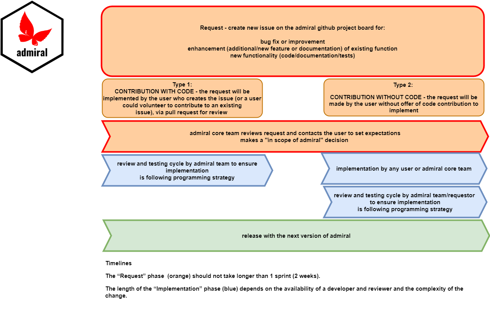

Introduction
This vignette gives you an overview of the anticipated contribution model. The goal is to enable users of admiral to contribute and test the contribution model for admiral. Adjustments might be made over time.
Our contribution model is still in a testing phase so we advise you to contact us when an issue is created via Slack (If you don’t have access, use this link to join). We can discuss details or align expectations if you are not familiar with the admiral philosophy and programming strategy. The team will try to review the issues within the next sprint and give some initial feedback. Since we are not a 100% fully resourced software development team it might be that some issues will take longer to respond to depending on the amount of overall issues.
Basics
For each new contribution, the user creates an issue on the issue tab on GitHub to put it in our backlog.
Familiarize yourself with our programming strategy, guidance for GitHub usage and unit testing.
All created issues will be reviewed within the next sprint and the creator will receive an initial feedback via a comment. Someone from the core development team will then triage new issues by assigning the appropriate labels (such as “user request” so we can easily identify new requests).
Issues are meant to be taken on by users from the Pharma programming community and not exclusively by the admiral team from GSK and Roche.
Contribution Model

Type 1 Contribution with Code:
First, the user creates an issue or comments on an existing issue to notify that they’d like to contribute code.
Follow our development process step-by-step guide.
We advise to contact an admiral core development team directly via Slack before submitting code for complex functionality.
Type 2 Contribution without Code: